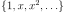
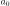
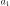
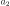
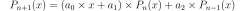

GramSchmidtAlgorithm¶
-
class
GramSchmidtAlgorithm(*args)¶ GramSchmidt algorithm used to build the orthonormal basis.
The algorithm builds the basis with respect to a specific distribution.
- Available constructors:
GramSchmidtAlgorithm(measure)
GramSchmidtAlgorithm(measure, referenceFamily)
Parameters: measure :
DistributionA measure for which the orthonormal polynomial basis is built.
referenceFamily :
OrthogonalUniVariatePolynomialFamilyA polynomial family from which the algorithm starts to build the orthonornal polynomial family. When not specified, the referenceFamily is the canonical one: .
Notes
It implements the Gram-Schmidt algorithm that builds the orthonormalized polynomial family with respect to the distribution measure, where the initial polynomial family is the one specified in referenceFamily.
Methods
getClassName()Accessor to the object’s name. getId()Accessor to the object’s id. getMeasure()Accessor to the measure. getName()Accessor to the object’s name. getRecurrenceCoefficients(n)Accessor to the recurrence coefficients. getReferenceFamily()Accessor to the reference family. getShadowedId()Accessor to the object’s shadowed id. getVisibility()Accessor to the object’s visibility state. hasName()Test if the object is named. hasVisibleName()Test if the object has a distinguishable name. setMeasure(measure)Accessor to the measure. setName(name)Accessor to the object’s name. setReferenceFamily(family)Accessor to the reference family. setShadowedId(id)Accessor to the object’s shadowed id. setVisibility(visible)Accessor to the object’s visibility state. -
__init__(*args)¶
-
getClassName()¶ Accessor to the object’s name.
Returns: class_name : str
The object class name (object.__class__.__name__).
-
getId()¶ Accessor to the object’s id.
Returns: id : int
Internal unique identifier.
-
getMeasure()¶ Accessor to the measure.
Returns: m :
DistributionThe measure for which the orthonormal polynomial basis is built.
-
getName()¶ Accessor to the object’s name.
Returns: name : str
The name of the object.
-
getRecurrenceCoefficients(n)¶ Accessor to the recurrence coefficients.
Parameters: n : integer
Index ot the recurrence step.
Returns: coef : sequence of float
Calculate the coefficients of recurrence , ,  such that .
-
getReferenceFamily()¶ Accessor to the reference family.
Returns: family :
OrthogonalUniVariatePolynomialFamilyThe polynomial family from which the orthonormal polynomial family is built.
-
getShadowedId()¶ Accessor to the object’s shadowed id.
Returns: id : int
Internal unique identifier.
-
getVisibility()¶ Accessor to the object’s visibility state.
Returns: visible : bool
Visibility flag.
-
hasName()¶ Test if the object is named.
Returns: hasName : bool
True if the name is not empty.
-
hasVisibleName()¶ Test if the object has a distinguishable name.
Returns: hasVisibleName : bool
True if the name is not empty and not the default one.
-
setMeasure(measure)¶ Accessor to the measure.
Parameters: m :
DistributionThe measure for which the orthonormal polynomial basis is built.
-
setName(name)¶ Accessor to the object’s name.
Parameters: name : str
The name of the object.
-
setReferenceFamily(family)¶ Accessor to the reference family.
Parameters: family :
OrthogonalUniVariatePolynomialFamilyThe polynomial family from which the orthonormal polynomial family is built.
-
setShadowedId(id)¶ Accessor to the object’s shadowed id.
Parameters: id : int
Internal unique identifier.
-
setVisibility(visible)¶ Accessor to the object’s visibility state.
Parameters: visible : bool
Visibility flag.